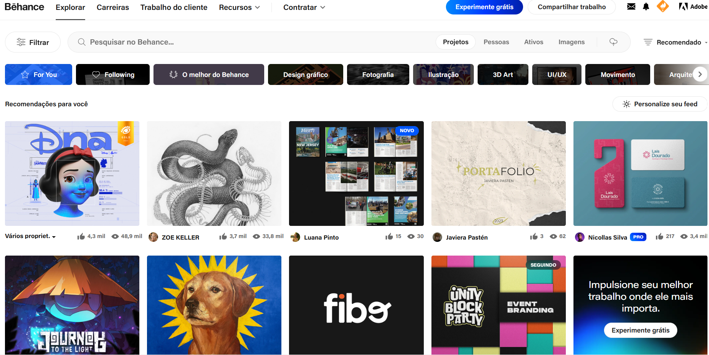
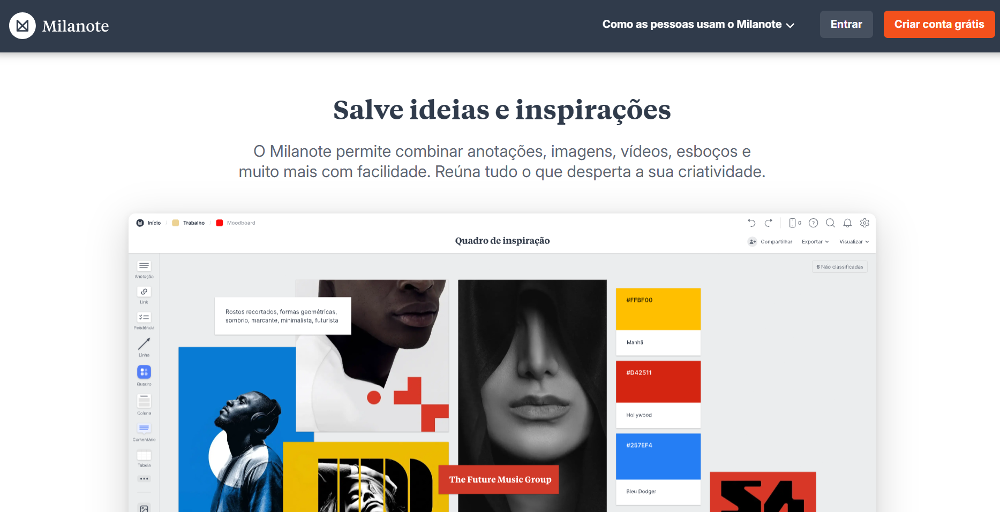
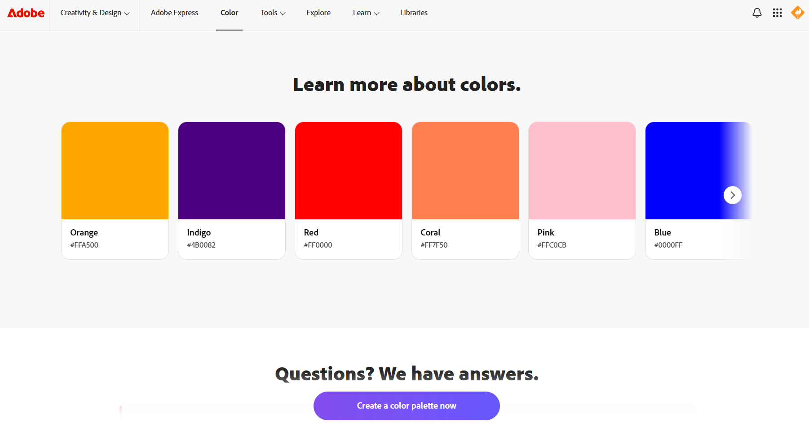
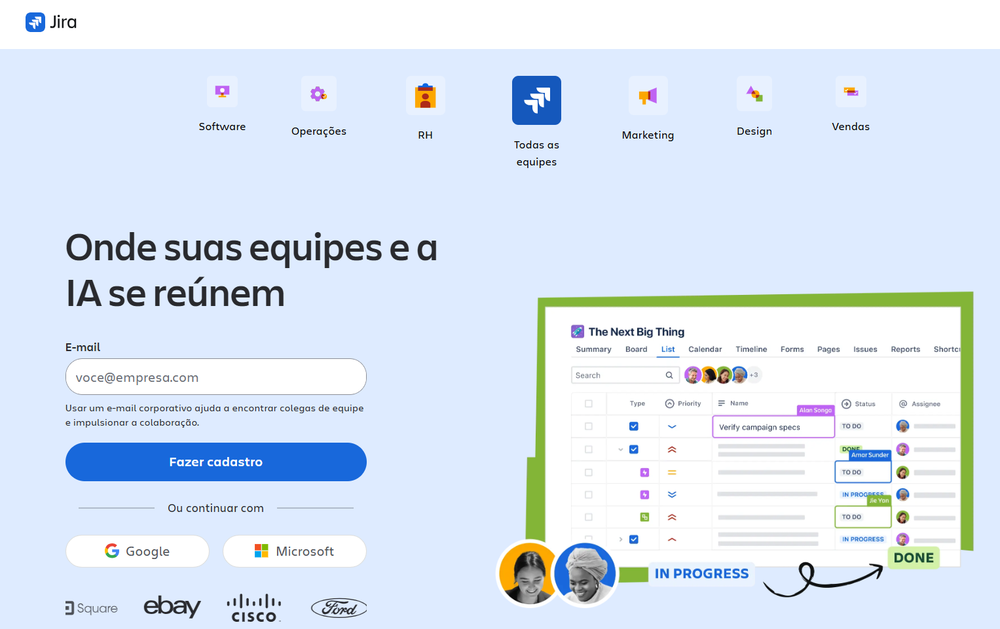
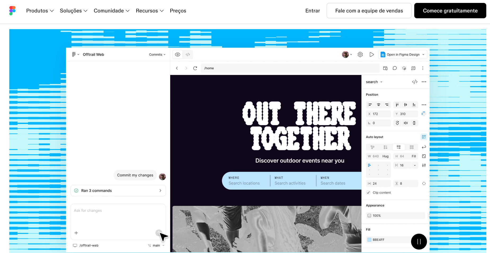

Meus sites favoritos: Mateus Carchedi Rodrigues
1. Behance

Fonte: Behance
>> Behance - Projetos Criativos
2. Milanote

Fonte: Milanote
>> Milanote - Ideias e Brainstorms
3. Adobe Colors

Fonte: Adobe Colors
>> Adobe Colors - Criação de Paletas de Cores
4. Jira

Fonte: Jira
>> Jira - Metodologia SCRUM
5. Figma

Fonte: Figma
>> Figma - Criação de Protótipos